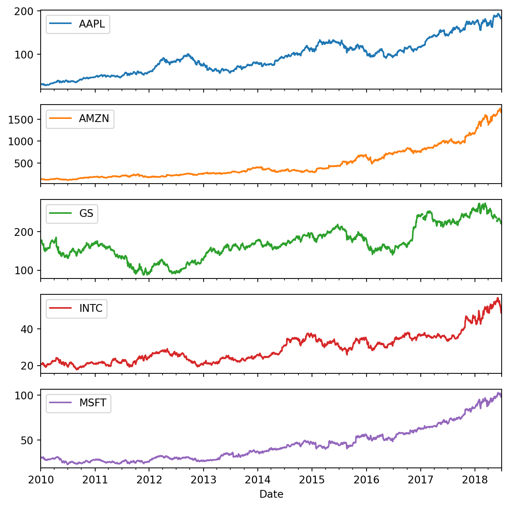
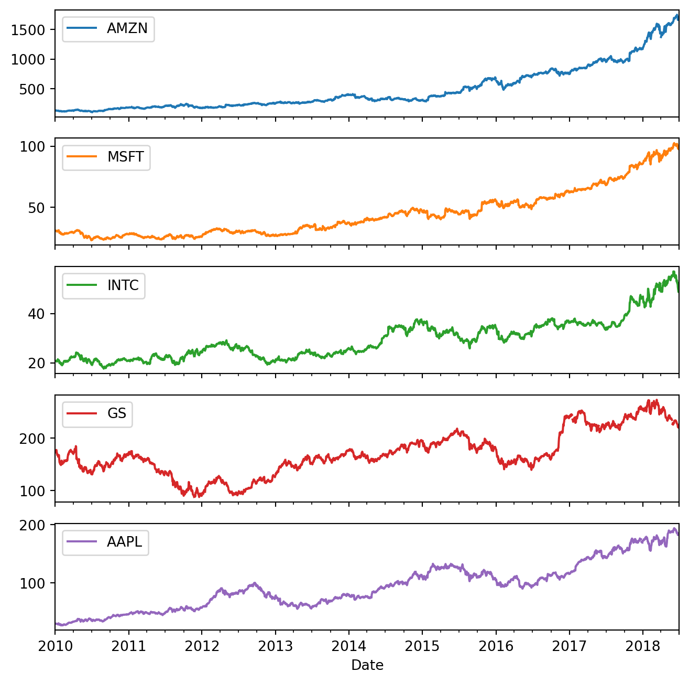

pip install 'ibis-framework[duckdb, postgres]' pandas polars db2pqThe best of both worlds: Using modern data frame libraries to create pandas data
WRDS
Polars
Ibis
pandas
1 Introduction
A strong point of pandas is its expressiveness. Its API allows users to explore data using succinct and (generally) intuitive code. However, some of this expressiveness relies on data being in forms (for example, with dates ready to serve as an index) that often differ from the data we have, and pandas can struggle to manipulate the data into those forms, especially with larger data sets.
A number of modern data frame libraries have emerged that address weaknesses of pandas. In this note, I use polars and Ibis to show how one can use these libraries to get the data into a form in which pandas can shine.
While the underlying data would occupy over 10 GB in memory, the polars variant below runs in about half a second. This approach may have particular appeal to pandas experts because the code is likely more familiar to experienced analysts of data frames.
I consider two Ibis alternatives. The first uses the same underlying parquet files used in the polars variant, but perhaps takes even less time than polars does. The second tweaks just a small portion of the earlier Ibis code to source the underlying data directly from the WRDS PostgreSQL database. Even so, it takes less than a second to run.
So we get the best of both worlds. We can use modern, lazy libraries to perform the heavy data manipulation, and then hand off a compact result to pandas for exploration and visualization.
Tip
This note uses several Python packages and parts of it rely on the existence of a local data repository of parquet files for WRDS data of the kind described in Appendix E of Empirical Research in Accounting: Tools and Methods. The following command (run in the terminal on your computer) installs the packages you need.
The code assumes you have set the environment variables DATA_DIR and WRDS_ID to point to the location of the parquet repository on your computer and your WRDS ID, respectively.
The necessary files for the parquet repository for this note can be created using the db2pq package using the following code. Note that wrds_update_pq("dsf", "crsp") will take about 12 minutes with a fast connection to WRDS, but only runs if the file on your computer is not current with the data on the WRDS server.
from db2pq import wrds_update_pq
wrds_update_pq("dsf", "crsp")
wrds_update_pq("stocknames", "crsp");crsp.dsf already up to date.
crsp.stocknames already up to date.This note was written using Quarto. The source code for this note is available here and the latest version of this PDF is here.
2 Expressive pandas
Since 2012, pandas has become the leading data frame library in Python. A real strength of pandas appears to be its expressiveness, which allows a user to explore data with succinct code. To show this, I will adapt an example from Hilpisch (2019). The following code reads data from a GitHub page …
import pandas as pd
url = ("https://raw.githubusercontent.com/yhilpisch/"
"py4fi2nd/refs/heads/master/source/"
"tr_eikon_eod_data.csv")
ticker_list = ["AAPL.O", "MSFT.O", "INTC.O", "AMZN.O", "GS.N"]
data = (pd
.read_csv(url, index_col=0, parse_dates=True)
[ticker_list]
)… and then one line of code generates Figure 1.
data.plot(figsize=(8, 8), subplots=True);
Looking at the code, it seems that pandas has magically intuited that the data set comprises a number of time series, so a call to the .plot() method of the pd.DataFrame generates a plot and subplots=True makes a subplot for each series. Of course, it wasn’t some special instinct for the meaning of data that allowed pandas to do this. Rather, by having dates in the first column of the CSV and then telling pandas to use that column to generate the Index for the pd.DataFrame, we get the data in the following form:
data.head()| AAPL.O | MSFT.O | INTC.O | AMZN.O | GS.N | |
|---|---|---|---|---|---|
| Date | |||||
| 2010-01-01 | NaN | NaN | NaN | NaN | NaN |
| 2010-01-04 | 30.572827 | 30.950 | 20.88 | 133.90 | 173.08 |
| 2010-01-05 | 30.625684 | 30.960 | 20.87 | 134.69 | 176.14 |
| 2010-01-06 | 30.138541 | 30.770 | 20.80 | 132.25 | 174.26 |
| 2010-01-07 | 30.082827 | 30.452 | 20.60 | 130.00 | 177.67 |
As can be seen, Date is different from the other “columns” of the data frame; in a sense, it’s not a column at all, but the index for the data frame:
data.indexDatetimeIndex(['2010-01-01', '2010-01-04', '2010-01-05', '2010-01-06',
'2010-01-07', '2010-01-08', '2010-01-11', '2010-01-12',
'2010-01-13', '2010-01-14',
...
'2018-06-18', '2018-06-19', '2018-06-20', '2018-06-21',
'2018-06-22', '2018-06-25', '2018-06-26', '2018-06-27',
'2018-06-28', '2018-06-29'],
dtype='datetime64[ns]', name='Date', length=2216, freq=None)Having the data in this form allows us to access the data with succinct code. We can use .loc[] to select by date …
data.loc['2010-01-08']AAPL.O 30.282827
MSFT.O 30.660000
INTC.O 20.830000
AMZN.O 133.520000
GS.N 174.310000
Name: 2010-01-08 00:00:00, dtype: float64… and [] to select by column.
data['AAPL.O']Date
2010-01-01 NaN
2010-01-04 30.572827
2010-01-05 30.625684
2010-01-06 30.138541
2010-01-07 30.082827
...
2018-06-25 182.170000
2018-06-26 184.430000
2018-06-27 184.160000
2018-06-28 185.500000
2018-06-29 185.110000
Name: AAPL.O, Length: 2216, dtype: float64An important operation for financial time series is resampling (Hilpisch, 2019, p. 215). For example, we could transform the daily data in data into weekly data with one line:
data.resample('W').last().head()| AAPL.O | MSFT.O | INTC.O | AMZN.O | GS.N | |
|---|---|---|---|---|---|
| Date | |||||
| 2010-01-03 | NaN | NaN | NaN | NaN | NaN |
| 2010-01-10 | 30.282827 | 30.66 | 20.83 | 133.52 | 174.31 |
| 2010-01-17 | 29.418542 | 30.86 | 20.80 | 127.14 | 165.21 |
| 2010-01-24 | 28.249972 | 28.96 | 19.91 | 121.43 | 154.12 |
| 2010-01-31 | 27.437544 | 28.18 | 19.40 | 125.41 | 148.72 |
Similarly with monthly data …
data.resample('ME').last().head()| AAPL.O | MSFT.O | INTC.O | AMZN.O | GS.N | |
|---|---|---|---|---|---|
| Date | |||||
| 2010-01-31 | 27.437544 | 28.1800 | 19.40 | 125.41 | 148.72 |
| 2010-02-28 | 29.231399 | 28.6700 | 20.53 | 118.40 | 156.35 |
| 2010-03-31 | 33.571395 | 29.2875 | 22.29 | 135.77 | 170.63 |
| 2010-04-30 | 37.298534 | 30.5350 | 22.84 | 137.10 | 145.20 |
| 2010-05-31 | 36.697106 | 25.8000 | 21.42 | 125.46 | 144.26 |
These examples demonstrate the expressiveness of pandas, especially with financial time series data. This facility is less surprising once you realize that pandas began life when Wes McKinney was working at AQR Capital Management.
However, I think there is a danger of overestimating the facility of working with pandas from such examples. My experience is that data sets rarely come in a form that allows one to use a DatetimeIndex with series identifiers as the columns.
Many data sets have a wider range of data types (one of the reasons for creating pandas in the first place) and data are often provided in a form that needs work to get to something like data above.
For example, many researchers, including academics, generally get stock prices and returns for US firms from CRSP. According to its website, “the Center for Research in Security Prices, LLC (CRSP) maintains the most comprehensive collection of security price, return, and volume data for the NYSE, AMEX and NASDAQ stock markets.” (See Chapter 7 of Gow and Ding (2024) for more on CRSP.) Academic researchers generally get CRSP data through Wharton Research Data Services, more commonly referred to as WRDS (pronounced “words”).
So a question might be: What do we need to do to get CRSP data into the form above? And can pandas do it for us? The rest of this note provides an answer to these two questions.
I will start with the second question, to which the answer is simply “no” (or at least “not easily”). The data we will need are found in two tables crsp.stocknames and crsp.dsf. The latter of these is about 2 GB on disk in parquet format, but would be larger in RAM, or in the SAS and PostgreSQL formats that WRDS provides.
One approach to using pandas with these data sets might seem to be to run SQL against the WRDS PostgreSQL database. But that’s not using pandas, so much as using SQL to do most of the heavy lifting. That doesn’t count in my book.1
What I have in mind for the second question is “can I go from dsf.parquet to the Figure 1 using pandas (and fairly normal hardware)?” No! I would say you get stuck with the very first step, which would be something like dfs = pd.read_parquet("dsf.parquet"). I tried it and my computer pretty much melted … to the extent that I had to reach under the machine and press the little-used “off” button.2
3 Generating Figure 1 using polars
In recent years, Python data frame libraries such as Dask and polars have emerged as alternatives to pandas. There are also what might be called framework libraries, such as Ibis, that can work with other libraries (such as DuckDB) and systems (such as PostgreSQL) to produce much or all of the functionality of data frame libraries.3 In fact, Ibis can work with polars too. Whereas data frame libraries typically define both a data structure and an execution model, framework libraries often define an abstraction layer that can target multiple backends.4
These newer data frame libraries likely emerged in part to address perceived weaknesses in pandas, such as its eager, in-memory approach to data analysis.
So I will move back to the first question and, to answer it, I will first try out the polars library to see whether it can help me create a pandas data set that I can use to reproduce Figure 1. For the purposes of this note, I’m going to use the parquet data repository that I set up along the lines described in Appendix E of Gow and Ding (2024). To facilitate this, I create the following load_parquet() function to allow polars to access data in my repository.
import polars as pl
from pathlib import Path
import os
def load_parquet(table, schema, *, data_dir=None):
if data_dir is None:
data_dir = Path(os.environ["DATA_DIR"]).expanduser()
path = data_dir / schema / f"{table}.parquet"
return pl.scan_parquet(path)Because pl.scan_parquet() does not immediately load data into memory, it returns almost instantly.5
%%ptime
dsf = load_parquet("dsf", "crsp")
stocknames = load_parquet("stocknames", "crsp")Wall time: 2.24 ms
The next step is to look up tickers and link them to the security identifier used by CRSP (permno). The tickers found in the data provided by Hilpisch above include suffixes that indicate the exchange the stocks traded on. I use a simple regular expression to strip off these suffixes.
import re
clean_tickers = [re.sub(r"\.[A-Z]+$", "", t) for t in ticker_list]An important detail about tickers is that they get reused over time. So a ticker match with a permno may have a range of dates over which it is valid. I’m going to assume that the tickers in Hilpisch (2019) were valid on the last date observed in his data set and look for the PERMNO match valid on that date.
%%ptime
end_date = pl.lit(data.index.max())
tickers = (
stocknames
.filter(pl.col("ticker").is_in(clean_tickers))
.filter(end_date.is_between(pl.col("namedt"), pl.col("nameenddt")))
.select("permno", "ticker")
)Wall time: 26.72 ms
Note that we could append .unique() to only select distinct rows if our code could produce duplicates. Or we could append .unique(subset=["permno"]) to keep only one row for each permno.
The following code checks that each permno appears in a single row of tickers. If not Python’s assert statement will trigger an error.
assert (
tickers
.group_by("permno")
.agg(pl.len().alias("n_rows"))
.select((pl.col("n_rows") <= 1).all())
.collect()
.item()
)Having obtained the permno data, I can use this to get the relevant return data from crsp.dsf. Note that .collect() is the point at which the lazy data frames (pl.LazyFrame objects) created by pl.scan_parquet() are materialized as data frames (pl.DataFrame objects). So this step takes a (relatively!) long time.
Note also that I get stock prices (prc) and returns both with (ret) and without (retx) dividends and other distributions. It turns out that the price series used by Hilpisch (2019) did not include the effects of distributions, so I will use retx in my analysis below.
%%ptime
start_date = pl.lit(data.index.min())
dsf_sub = (dsf
.join(tickers, on="permno", how="inner")
.filter(pl.col("date").is_between(start_date, end_date))
.select("ticker", "date", "prc", "ret", "retx")
.with_columns(pl.col(["prc", "ret", "retx"]).cast(pl.Float64))
.collect()
)Wall time: 1.134 s
An important step in the code above is the conversion of prices and returns to floating-point data types, as they are stored in the WRDS PostgreSQL database as NUMERIC type. For example, prc is stored as NUMERIC(11, 5), which means a numeric type with a total of 11 digits and 5 digits after the decimal place. The return variables (ret and retx) are stored as NUMERIC(10, 6). The db2pq library I used to create the parquet files from the WRDS PostgreSQL data uses the pyarrow library to determine the best type to match the PostgreSQL type.6 The code below confirms that the PostgreSQL types are effectively retained in the parquet files I am loading with polars.
%%ptime
print(dsf
.head(5)
.select("permno", "date", "prc", "ret", "retx")
.collect())shape: (5, 5)
┌────────┬────────────┬───────────────┬───────────────┬───────────────┐
│ permno ┆ date ┆ prc ┆ ret ┆ retx │
│ --- ┆ --- ┆ --- ┆ --- ┆ --- │
│ i32 ┆ date ┆ decimal[11,5] ┆ decimal[10,6] ┆ decimal[10,6] │
╞════════╪════════════╪═══════════════╪═══════════════╪═══════════════╡
│ 10000 ┆ 1986-01-07 ┆ -2.56250 ┆ null ┆ null │
│ 10000 ┆ 1986-01-08 ┆ -2.50000 ┆ -0.024390 ┆ -0.024390 │
│ 10000 ┆ 1986-01-09 ┆ -2.50000 ┆ 0.000000 ┆ 0.000000 │
│ 10000 ┆ 1986-01-10 ┆ -2.50000 ┆ 0.000000 ┆ 0.000000 │
│ 10000 ┆ 1986-01-13 ┆ -2.62500 ┆ 0.050000 ┆ 0.050000 │
└────────┴────────────┴───────────────┴───────────────┴───────────────┘Wall time: 4.69 ms
The next step is to recreate, as best we can, the price series used in Hilpisch (2019). My assumption is that the prices are adjusted for splits such that the adjusted price at the end of the series used by Hilpisch (2019) equals the unadjusted price on that date (i.e., what should be in prc). I then recreate preceding adjusted prices in each time series by working back from the ending price using returns (and I confirmed by inspecting the data in Hilpisch (2019) that retx is the appropriate return measure). One way to interpret the code below is that taking one stock at a time, growth_last is the cumulative returns for each stock over the whole time series and the adjusted price for each date is the final price (prc_last) multiplied by the cumulative returns to date (growth) divided by growth_last.
Note that the syntax here is pretty “pandas”-like in the sense that we sort the data and then apply cum_prod() to (1 + retx). The concatenation of three .with_columns() methods calls is needed to allow polars to refer to results from previous calls in each call.
%%ptime
dsf_adj = (
dsf_sub
.sort(["ticker", "date"])
.with_columns(
growth=(1.0 + pl.col("retx")).cum_prod().over("ticker")
)
.with_columns(
prc_last=pl.col("prc").last().over("ticker"),
growth_last=pl.col("growth").last().over("ticker"),
)
.with_columns(
prc=pl.col("prc_last") * pl.col("growth") /
pl.col("growth_last")
)
.drop(["growth", "prc_last", "growth_last"])
)Wall time: 11.18 ms
The final step is to .pivot() the pl.DataFrame into the “wide” form we’re looking for to match the Hilpisch (2019) data, then convert to pandas with .to_pandas(). Once we have a pd.DataFrame, we can set the index using the date column.
%%ptime
data_alt = (dsf_adj
.pivot(
index="date",
on="ticker",
values="prc")
.to_pandas()
.set_index("date")
)Wall time: 10.51 ms
It turns out that the index in the original data frame is filled out with empty rows on public holidays, likely because the original data included commodities and exchange rates that traded on those dates and we omitted those data here. Having the dates in the index actually makes the plot look better, so I effectively add them to the index of data_alt by using .reindex(data.index).
%%ptime
data_alt = data_alt.reindex(data.index)Wall time: 0.59 ms
Now we have the data in the right pandas form with a date index, we can return to the “expressive pandas” we saw in Section 2. For the purposes of this note, I focus on the simple .plot() method call to generate Figure 2.
data_alt.plot(figsize=(8, 8), subplots=True);

Comparing Figure 1 and Figure 2, it seems we have successfully re-created the original data from CRSP data.
3.1 Generating Figure 1 using Ibis and DuckDB
An alternative to using polars would be to use Ibis and its default backend, DuckDB.
I import Ibis and the _ placeholder, as the latter facilitates more succinct code. I also turn on interactive mode to make it easier to inspect the data in tables if I need to do so.
import ibis
from ibis import _
ibis.options.interactive = TrueI next make a load_parquet_ibis() function that I can use to load data from my parquet repository.
def load_parquet_ibis(con, table, schema, *, data_dir=None):
if data_dir is None:
data_dir = Path(os.environ["DATA_DIR"]).expanduser()
path = data_dir / schema / f"{table}.parquet"
# register the parquet file as an Ibis table
return con.read_parquet(str(path), table_name=f"{schema}_{table}")The short time taken to “load” the data below suggests that, analogous to the results of pl.scan_parquet(), the tables created here are lazy Ibis expressions rather than materialized data frames.
%%ptime
con = ibis.duckdb.connect()
dsf = load_parquet_ibis(con, "dsf", "crsp")
stocknames = load_parquet_ibis(con, "stocknames", "crsp")Wall time: 97.99 ms
A lot of the remaining code is a largely a straightforward translation of the polars code into Ibis equivalents. We start by creating tickers.
%%ptime
end_date = ibis.literal(data.index.max())
tickers = (
stocknames
.filter(_.ticker.isin(clean_tickers))
.filter((_.namedt <= end_date) & (end_date <= _.nameenddt))
.select("permno", "ticker")
)Wall time: 1.45 ms
Then the Ibis version of dsf_sub from above.
%%ptime
start_date = ibis.literal(data.index.min())
num_cols = ["prc", "ret", "retx"]
dsf_sub = (
dsf
.inner_join(tickers, predicates=[dsf.permno == tickers.permno])
.filter(_.date.between(start_date, end_date))
.select("ticker", "date", *num_cols)
.mutate(**{c: getattr(_, c).cast("float64") for c in num_cols})
)Wall time: 1.99 ms
Note that I am using some Python tricks here. First, *num_cols unpacks the list num_cols into positional arguments. So, .select("ticker", "date", *num_cols) is equivalent to .select("ticker", "date", "prc", "ret", "retx").
Second, ** unpacks a dictionary into keyword arguments. So .mutate(**{c: getattr(_, c).cast("float64") for c in num_cols}) unpacks into the following:
{
"prc": _.prc.cast("float64"),
"ret": _.ret.cast("float64"),
"retx": _.retx.cast("float64"),
}And finally, the equivalent of dsf_adj. Here I am using window functions, which are well-supported by DuckDB. Originally, I had attempted to use Ibis with a polars backend, but the polars backend does not support window functions with Ibis. It is not clear to me whether this is an inherent limitation of polars, or is simply a gap in the implementation of the polars backend for Ibis that may be addressed in future versions.
The code here seems pretty transparent (once you understand the prc = prc_last * growth / growth_last logic discussed above).
%%ptime
# window for cumulative calculations (up to current row)
w = ibis.window(group_by=_.ticker, order_by=_.date)
def cumprod1p(x):
# cumprod(1 + x) = exp(cumsum(log(1 + x)))
return (1 + x).ln().cumsum().over(w).exp().cast("float64")
dsf_adj = (
dsf_sub
.mutate(growth = cumprod1p(_.retx))
.mutate(
prc_last = _.prc.last().over(w),
growth_last = _.growth.last().over(w),
)
.mutate(prc = _.prc_last * _.growth / _.growth_last)
.drop("growth", "prc_last", "growth_last")
)Wall time: 2.03 ms
And the final step is very similar to what we saw with polars. We simply pivot_wider(), sort by date (important for the pandas index) and then execute() to create a pandas date frame, which we can apply .set_index("date") to just like above. Note that pivot_wider() is translated into a group-by aggregate query in SQL. If we don’t specify values_agg="max", it seems that values_agg="first" by default. This works with DuckDB, which has a first() aggregate, but will not work with PostgreSQL, which does not. Because there should be just one prc for each (date, ticker) combination, the use of max() should not affect the output.
%%ptime
data_alt = (
dsf_adj
.select("date", "ticker", "prc")
.pivot_wider(
names_from="ticker",
values_from="prc",
values_agg="max",
)
.order_by("date")
.execute()
.set_index("date")
)Wall time: 144.64 ms
As before, we .reindex() to make the plot look better.
%%ptime
data_alt = data_alt.reindex(data.index)Wall time: 0.47 ms
And the resulting plot in Figure 3 suggests that again we have successfully recreated the pandas data frame seen in Hilpisch (2019).
data_alt.plot(figsize=(8, 8), subplots=True);

3.2 Generating Figure 1 using Ibis and WRDS PostgreSQL
Now that we have Ibis code, it is a trivial matter to replace the DuckDB backend with a PostgreSQL backend using the WRDS PostgreSQL database. I have my WRDS ID in the environment variable WRDS_ID. Only the first chunk of code below is changed from the Ibis-with-DuckDB version in Section 3.1. This first chunk takes a (relatively!) long time to run because Ibis needs to connect to the WRDS database and query it for metadata about the two tables it is using.
Looking at Figure 4, it seems that this code also effectively reproduces the data frame created by the pandas code in Section 2.
%%ptime
wrds_id = os.environ['WRDS_ID']
con = ibis.postgres.connect(
host='wrds-pgdata.wharton.upenn.edu',
database='wrds',
user=wrds_id,
port=9737
)
dsf = con.table('dsf', database='crsp')
stocknames = con.table('stocknames', database='crsp')Wall time: 432.21 ms
The remaining code is identical to that above for Ibis.
%%ptime
end_date = ibis.literal(data.index.max())
tickers = (
stocknames
.filter(_.ticker.isin(clean_tickers))
.filter((_.namedt <= end_date) & (end_date <= _.nameenddt))
.select("permno", "ticker")
)Wall time: 2.04 ms
%%ptime
start_date = ibis.literal(data.index.min())
num_cols = ["prc", "ret", "retx"]
dsf_sub = (
dsf
.inner_join(tickers, predicates=[dsf.permno == tickers.permno])
.filter(_.date.between(start_date, end_date))
.select("ticker", "date", *num_cols)
.mutate(**{c: getattr(_, c).cast("float64") for c in num_cols})
)Wall time: 4.15 ms
%%ptime
# window for cumulative calculations (up to current row)
w = ibis.window(group_by=_.ticker, order_by=_.date)
def cumprod1p(x):
# cumprod(1 + x) = exp(cumsum(log(1 + x)))
return (1 + x).ln().cumsum().over(w).exp().cast("float64")
dsf_adj = (
dsf_sub
.mutate(growth = cumprod1p(_.retx))
.mutate(
prc_last = _.prc.last().over(w),
growth_last = _.growth.last().over(w),
)
.mutate(prc = _.prc_last * _.growth / _.growth_last)
.drop("growth", "prc_last", "growth_last")
)Wall time: 3.01 ms
The next chunk takes a little longer than the same code chunk took in Section 3.1, because the data need to be transported from the WRDS PostgreSQL server to my computer.
%%ptime
data_alt = (
dsf_adj
.select("date", "ticker", "prc")
.pivot_wider(
names_from="ticker",
values_from="prc",
values_agg="max",
)
.order_by("date")
.execute()
.set_index("date")
)Wall time: 251.42 ms
%%ptime
data_alt = data_alt.reindex(data.index)Wall time: 0.58 ms
data_alt.plot(figsize=(8, 8), subplots=True);
References
Gow, I.D., Ding, T., 2024. Empirical research in accounting: Tools and methods. Chapman & Hall/CRC, London, UK. https://doi.org/10.1201/9781003456230
Hilpisch, Y.J., 2019. Python for finance: Mastering data‐driven finance, 2nd ed. O’Reilly Media, Sebastopol, CA.
Footnotes
Though in Section 3.2, I effectively run SQL against the WRDS PostgreSQL database, but using the Ibis library to generate the SQL.↩︎
This was on an M4 Pro Mac mini with 24 GB of RAM.↩︎
The term “framework libraries” is one I made up. If you go to the Ibis website https://ibis-project.org, Ibis is described as “an open source dataframe library that works with any data system”. But Ibis relies on some other system to provide the execution engine, which it calls the backend. Most data frame libraries provide their own execution engines.↩︎
Note, some of these data frame libraries are not limited to Python. For example, the polars documentation states that polars “is written in Rust, and available for Python, R and NodeJS [sic].” https://docs.pola.rs↩︎
Note that I use a little custom “cell magic”
%%ptimeto produce execution times in a way that prints nicely in the PDF output. See the source code for this document for details.↩︎See the source code for details.↩︎